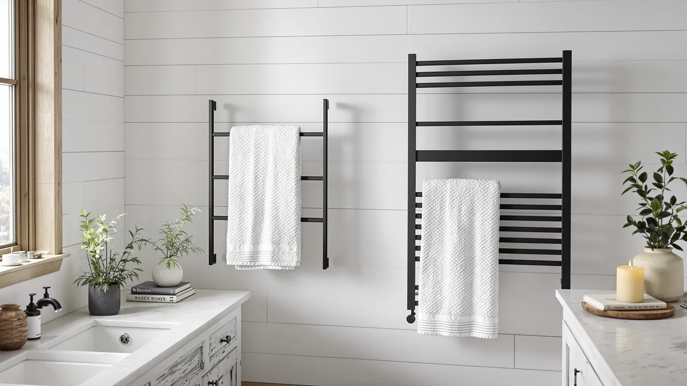

Best How to Clean Towel Warmer (2026) | Best Towel Warmers
Prices and picks verified as of August 2026. Independent, reader-supported reviews.


Things to Know Before You Buy
- Electricity and water do not mix: unplug the towel warmer and let it cool before any wipe-down. A damp cloth is safe, a dripping one is not.
- Skip abrasive cleaners: steel wool and scouring powder leave permanent scratches in chrome, brushed nickel, and stainless steel finishes.
- Vinegar handles most buildup: a 1:1 mix of white vinegar and water dissolves hard water spots without harming metal finishes.
- Frequency beats effort: a two-minute wipe once a week prevents the caked-on grime that takes half an hour to remove each season.
- Bucket warmers need interior care too: towel lint settles at the bottom of the drum and transfers back onto every fresh towel until you wipe it out.
Learning how to clean towel warmer bars and buckets takes about 30 minutes, a bottle of white vinegar, and a couple of microfiber cloths. Bathroom humidity coats the metal in a film of dust, hairspray residue, and hard water minerals, and that film dulls the finish while it traps lint against the heating surface. Worse, it can block the vents that keep the element from overheating.
This guide walks you through the five steps we use on every warmer style, from wall-mounted racks to bucket warmers like the SereneLife models in our roundups. We pulled the care rules from manufacturer manuals across SereneLife, ENZE, and Lagute, so the method below cleans thoroughly without voiding a warranty or scratching a chrome finish. Expect the first deep clean to take the full half hour. Maintenance wipes after that take two minutes.
What You'll Need
- Supplies: White vinegar, mild dish soap, microfiber cloths
- Tools: Soft-bristle brush, vacuum with brush attachment (both safe on towel warmer finishes)
Step 1: Unplug the warmer and let it cool completely
Flip the switch to off, pull the plug from the wall, and walk away for at least 15 minutes. Most electric towel warmers run between 120 and 150 degrees Fahrenheit, hot enough to sting bare skin and to flash-dry cleaning solution into streaks before you can buff it out. A cool surface accepts cleaner evenly and protects your hands.
Use the wait to stage your supplies: white vinegar, dish soap, two or three microfiber cloths, and a soft-bristle brush. If you own a bucket-style warmer, lift out any towels and leave the lid open so the interior cools along with the shell. Skipping this cooling period causes most of the scratched finishes and tripped GFCI outlets we hear about, so build it into your routine every time you clean a towel warmer.
Step 2: Wipe down the exterior with soapy water
Mix one drop of dish soap into a bowl of warm water. Dip a microfiber cloth, then wring it hard until it feels barely damp. Wipe every bar from top to bottom, along with the side panels, the lid and handle on bucket models, and the mounting brackets on wall units. Barely damp is the whole trick. Water dripping into a control panel or around the heating element can end the life of the unit on the spot.
Work in straight lines rather than circles on brushed nickel and stainless steel. Circular scrubbing leaves swirl marks that show under bathroom lighting, while wiping with the grain keeps the finish uniform. Follow up with a second cloth dampened in plain water to lift any soap film, because leftover soap attracts dust and dulls chrome within days. This basic wipe-down handles most towel warmer cleaning. The remaining steps target the stubborn stuff.
Step 3: Remove hard water spots with diluted vinegar
Hard water leaves chalky white spots wherever condensation dries on the bars, and soap will not touch them. Mix equal parts white vinegar and warm water, dampen a cloth, and press it against each mineral spot for about a minute. The mild acid dissolves the calcium deposit so you can buff it away with light pressure instead of scrubbing.
For crusted buildup around joints and welds, dip a soft-bristle brush in the same solution and work it into the seam. An old toothbrush handles this fine. Wipe with a plain damp cloth afterward so no vinegar sits on the finish, since extended acid contact can dull chrome plating. Skip this step on painted or powder-coated towel warmers unless the manufacturer's care sheet approves vinegar, and do not substitute CLR or other industrial descalers, which are too aggressive for decorative finishes.
Step 4: Clear the vents, crevices, and cord area
Dust and towel lint collect in the spots you cannot see: ventilation slots, the gap between bars and mounting posts, and the point where the power cord enters the housing. Run a vacuum with a brush attachment over the vents first. Blocked vents force the heating element to run hotter than designed, which shortens its life and can trigger the thermal cutoff mid-cycle.
On bucket-style warmers, wipe the interior drum with a barely damp cloth to pick up the lint layer that builds at the bottom, since a fuzzy drum transfers lint back onto every fresh towel. Check the cord along its full length while you are there. Cracked insulation or a scorched plug means you stop using the unit until you replace the cord, not after. A five-minute pass through these hidden areas does more for the lifespan of a towel warmer than any amount of exterior polishing.
Step 5: Dry everything and run a test heat cycle
Buff every surface with a dry microfiber cloth until no moisture remains, paying extra attention to seams, the underside of bars, and the rim of a bucket lid. Trapped water causes the faint musty smell some owners notice on the first heat cycle after cleaning, and a thorough dry-down prevents it.
Plug the warmer back in, switch it on, and run a 10 to 15 minute heat cycle with no towels loaded. This test confirms the element still heats evenly and evaporates any dampness you missed. If a bar stays cold or the unit trips the outlet, unplug it and recheck for moisture around the controls before assuming the worst. Once the cycle finishes clean, load a towel and get back to normal use. Repeat the full deep clean once a season, with a quick weekly wipe in between, and your towel warmer stays presentable for years.
Common Mistakes to Avoid
Spraying cleaner directly onto the unit tops the list. Overspray seeps into vents and control housings, and the repair costs more than the two seconds the shortcut saved. Spray the cloth instead, every time.
Cleaning while the unit is hot comes next. Solutions flash-dry into streaks on a 140-degree bar, and vinegar etches faster on heated metal. Cool first, clean second.
Abrasives cause the damage you cannot undo. Steel wool, scouring powder, and the green side of a kitchen sponge all leave permanent scratches in chrome and brushed nickel. Once you scratch through the plating, moisture reaches the base metal and rust follows within months, especially in a humid bathroom. Bleach deserves its own warning here: it discolors stainless steel and pits chrome, so keep it away from your towel warmer entirely.
Ignoring the manual can cost you the warranty. Several brands, SereneLife included, exclude damage from unapproved cleaners in their coverage terms, so a two-minute read of the care page protects a purchase worth $90 or more. And skipping the interior of a bucket warmer counts as a mistake too. The shell can shine while the drum sheds lint onto every towel you warm, which defeats the point of owning one.
Our Top Picks
If your current unit has corroded past the point where cleaning helps, or you want a towel warmer with fewer crevices to maintain, these three models from our roundups balance heat performance with easy upkeep.

Editor's Pick
SereneLife WIFI Luxury Rectangle Towel
A smooth-walled bucket with app scheduling, so towels heat right before you shower instead of sitting warm and damp all day.
$89.99
Check Price on Amazon
Best Value
SereneLife WiFi-enabled Towel Warmer Bucket
Handles oversized bath sheets and robes, and the wide opening makes the interior wipe-down in step 4 painless.
$94.99
Check Price on Amazon
Premium Choice
ENZE Smart Rotating Heated Towel
A rotating wall rack with smart controls; the open-bar design collects less lint than any bucket and dries fast between uses.
$189.99
Check Price on AmazonHow often should you clean a towel warmer?
Wipe the bars or bucket shell with a damp microfiber cloth once a week, and run the full five-step deep clean once a season.
Can you use vinegar on a towel warmer?
Yes, on chrome, stainless steel, and brushed nickel, as long as you dilute it 1:1 with water and wipe it off with a plain damp cloth afterward.
Frequently Asked Questions
How often should you clean a towel warmer?
Wipe the bars or bucket shell with a damp microfiber cloth once a week, and run the full five-step deep clean once a season. Bump the deep clean to monthly if you have hard water, since mineral spots build faster and get harder to remove the longer they sit.
Can you use vinegar on a towel warmer?
Yes, on chrome, stainless steel, and brushed nickel, as long as you dilute it 1:1 with water and wipe it off with a plain damp cloth afterward. Skip vinegar on painted or powder-coated finishes unless the manufacturer's care instructions approve it, because the acid can dull the coating.
How do you clean the inside of a towel warmer bucket?
Unplug the bucket, let it cool, then wipe the interior drum with a barely damp soapy cloth followed by a dry one. Lint settles at the bottom of the drum, so give the base an extra pass. A fuzzy drum sheds lint back onto every towel you warm.
Why does my towel warmer smell musty?
Trapped moisture is the usual cause. Damp towels left inside a closed bucket, or water left on the bars after cleaning, feed the mildew that produces the smell. Dry the unit thoroughly, run an empty heat cycle for 15 minutes, and store a bucket warmer with the lid open between uses.
Will cleaning products damage the heating element?
Not if you keep them on the outside. The element sits sealed inside the bars or the drum wall, where a damp cloth cannot reach it. Damage happens when liquid drips into vents or the control housing, which is why you spray the cloth rather than the unit and keep every wipe barely damp.
Verdict
Knowing how to clean towel warmer bars and buckets comes down to five habits: cool the unit, wipe it with barely damp cloths, dissolve mineral spots with diluted vinegar, clear the vents and cord area, then dry and test. The whole routine takes about 30 minutes a season and under $15 in supplies, and it prevents the two failures that kill these units early, corrosion on scratched finishes and overheating from blocked vents. Pair the seasonal deep clean with a two-minute weekly wipe and the seasonal job shrinks to a quick once-over, because grime never gets time to harden.
If your current unit is past saving, the SereneLife WIFI Luxury Rectangle Towel bucket at $89.99 is the model we point most readers toward, with a smooth interior that wipes out fast and app scheduling that keeps towels from sitting damp. Whichever towel warmer sits in your bathroom, the habits above keep the finish intact and the element heating evenly, which is what actually decides how long these units last.